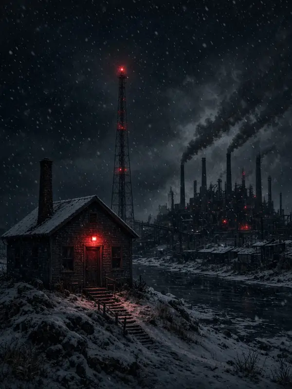
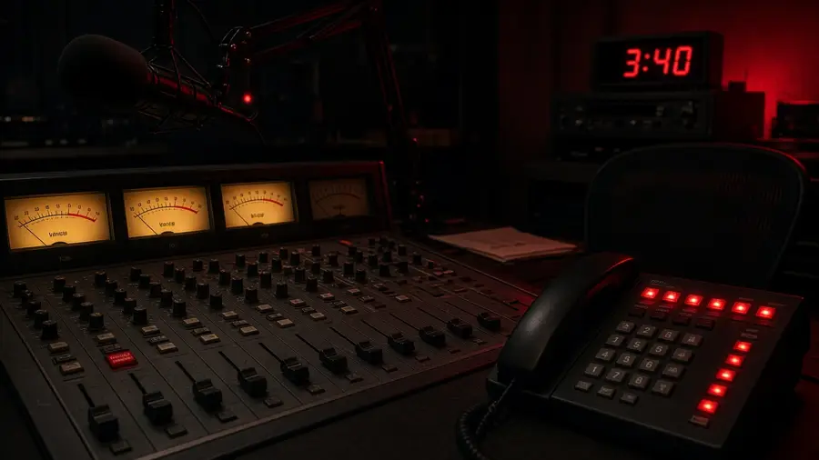

Réal : « Check ça, Christian — le pitch de ta prochaine 4th Hour. En anglais, comme t'as demandé. »

The Call-In Hour
“Every night at 3:40, a dead man calls in to tell her who to save.”
Pitch — plan en préparationWinter 1995, Marrow Falls, a mill town on a frozen river. Nadia Kell hosts « Night Line », the overnight call-in show at CKMF that nobody at the station takes seriously. One night at 3:40 the switchboard lights up: Danny Oake, a regular listener who drowned in the river a year ago. He knows things. He tells her which of tonight's callers won't make it to morning, and how to save them.
She saves one. Then two. Ratings climb; the town starts listening at 3:40. But each time, the delay log shows one call too many. Danny is honest about the price: every life she saves leaves an empty chair, and someone has to take his place on the line.
Nadia keeps the dump button under her finger, but she figures out too late that she's the one who's been on air the whole time.

- The hour opens at 3:40.
- The offer — and its cost: every saved life leaves an empty chair.
- The File Page closes it: “Confirmed. File.”
- ~25,000 words, ~14 chapters
- English only
- Written by Claude, Réal as editor
- Then an Arena audiobook
Marrow Falls is invented. Town and character names may still change.
Pitch du 22 octobre 2026 · Réal